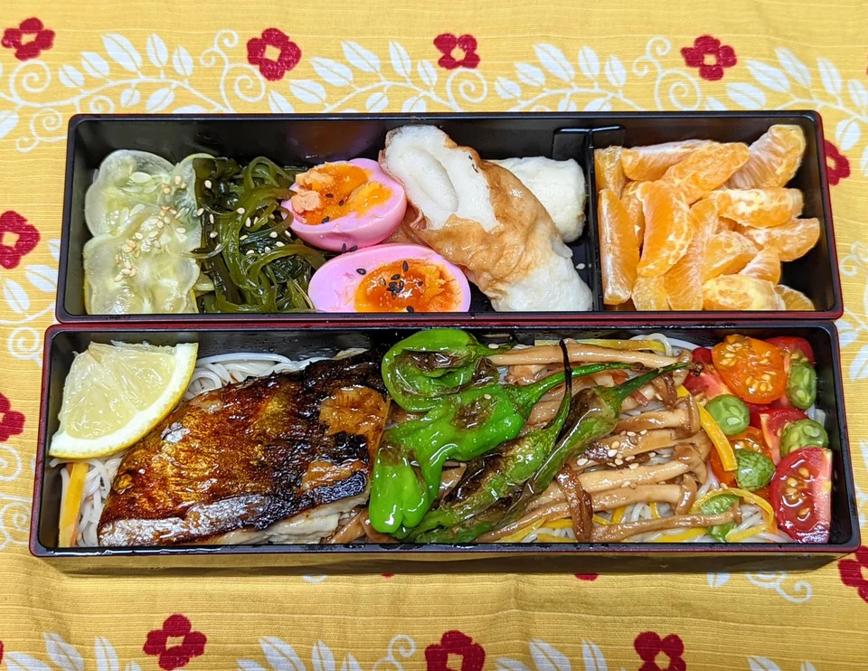

A bento (弁当, bentō) is the Japanese iteration of a single-portion take-out or home-packed meal, often for lunch. Outside Japan, it is common in other East and Southeast Asian culinary styles, especially within Chinese, Korean, Singaporean cuisines and more, as rice is a common staple food in the region. The term bento is derived from the Chinese term biandang (便當, pinyin: biàndāng), which means "convenient" or "convenience".